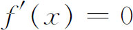
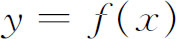
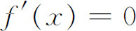
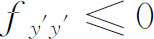
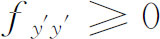
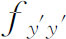

6．二次变分
正如欧拉和拉格朗日意识到的，欧拉微分方程只是使积分取极大或极小的解所应满足的一个必要条件。他们用微分方程来求解，然后凭借直观或物理背景来决定这个解是否提供一个极大或极小。欧拉方程的作用完全类似于普通微积分中的条件

。使
取极大或极小的x值一定满足
，但反过来不一定对。欧拉方程的解必须满足什么样的附加条件才能真正使一个依赖于y（x）的积分取到极大或极小？这个问题拉普拉斯在1782年曾处理过，但没有成功。以后勒让德在1786年着手解决这个问题(27)。在普通微积分中，在使f′（x）＝0的x值处，f″（x）的符号决定着f（x）是否取极大或极小。正是以这个事实为指导，勒让德研究了二次变分δ2J，重新改造了二次变分的形式，并且得到结论说：对于满足欧拉方程并且通过（x0，y0）和（x1，y1）的曲线y（x），只要沿y（x）的每一点x处

，则J取极大；类似地，对于同样的曲线y（x），只要沿y（x）的每一点x处
，则J取极小。然后勒让德把这个结果推广到比（6）更一般的积分上去。但是，勒让德在1787年认识到，关于
的条件仅仅是使y（x）成为极大或极小曲线的一个必要条件。寻求使（6）的积分达到极大或极小的曲线y（x）的充分条件的问题，在18世纪没有得到解决。参考书目
Bernoulli，James：Opera，2 vols．，1744，reprint by Birkhaüser，1968．
Bernoulli，John：Opera Omnia，4 vols．，1742，Georg Olms（reprint），1968．
Bliss，Gilbert A．：The Calculus of Variations，Open Court，1925．
Bliss，Gilbert A．：“The Evolution of Problems in the Calculus of Variations，”Amer．Math．Monthly，43，1936，598-609．
Cantor，Moritz：Vorlesungen über Geschichte der Mathematik，B．G．Teubner，1898 and 1924，Vol．3，Chap．117，and Vol．4，1066-1074．
Caratheodory，C．：Introduction to Series（1），Vol．24 of Euler's Opera Omnia，viii-lxii，Orell Füssli，1952．Also in C．Caratheodory：Gesammelte mathematische Schriften，C．H．Beck，1957，Vol．5，pp．107-174．
Darboux，Gaston：Leçons sur la théorie générale des surfaces，2nd ed．，Gauthier-Villars，1914，Vol．1，BookⅢ，Chaps．1-2．
Euler，Leonhard：Opera Omnia，（1），Vols．24-25，Orell Füssli，1952．
Hofmann，Joseph E．：“Über Jakob Bernoullis Beiträge zur Infinitesimalmathematik，”L'Enseignement Mathématique，（2），2，1956，61-171；published separately by Institut de mathématiques，Geneva，1957．
Huke，Aline：An Historical and Critical Study of the Fundamental Lemma in the Calculus of Variations，University of Chicago Contributions to the Calculus of Variations，University of Chicago Press，Vol，1，1930，pp．45-160．
Lagrange，Joseph-Louis：Œuvres de Lagrange，Gauthier-Villars，1867-1869，relevant papers in Vols．1-3．
Lagrange，Joseph-Louis：Mécanique analytique，2 vols．，4th ed．，Gauthier-Villars，1889．
Lecat，Maurice：Bibliographie du calcul des variations depuis les origines jusqu'à 1850，Gand，1916．
Montucla，J．F．：Histoire des mathématiques，1802，Albert Blanchard（reprint），1960，Vol．3，643-658．
Porter，Thomas Isaac：“A History of the Classical Isoperimetric Problem，”University of Chicago Contributions to the Calculus of Variations，University of Chicago Press，1933，Vol．2，pp．475-517．
Smith，David E．：A Source Book in Mathematics，Dover（reprint），1959，pp．644-655．
Struik，D．J．：A Source Book in Mathematics，1200—1800，Harvard University Press，1969，pp．391-413．
Todhunter，Isaac：A History of the Calculus of Variations during the Nineteenth Century，1861，Chelsea（reprint），1962．
Woodhouse，Robert：A History of the Calculus of Variations in the Eighteenth Century，1810，Chelsea（reprint），1964．
————————————————————
(1) 第269页＝Opera，1，161．
(2) Acta Erud．，1697，206-211＝Opera，1，187-193．
(3) Acta Erud．，1697，211-217＝Opera，2，768-778．
(4) Opera，1，187-193．
(5) 第214页。
(6) Mém．de l'Acad．des Sci．，Paris，1706，235＝Opera，1，424．
(7) Acta Erud．，1701，213 ff．＝Opera，2，897-920．
(8) Mém．de l'Acad．des Sci．，Paris，1718，100 ff．＝Opera，2，235-269．
(9) Comm．Acad．Sci．Petrop．，3，1728，110-124，pub．1732＝Opera，（1），25，1-12．
(10) Comm．Acad．Sci．Petrop．，7，1734/1735，135-149，pub．1740＝Opera，（1），25，41-53．
(11) Comm．Acad．Sci．Petrop．，8，1736，159-190，pub．1741＝Opera，（1），25，54-80．
(12) Opera，（1），24．
(13) Œuvres，2，354-359，457-463．
(14) Œuvres，2，457-463．
(15) 有一些例子，例如光线从凹面镜的反射，这时光线所取路径需要极大的时间。这个事实为费马所知，并由哈密顿（William R．Hamilton）明确叙述过。
(16) Mém．de l'Acad．des Sci．，Paris，1744．
(17) Misc．Taur．，2，1760/1761，173-195，pub．1762＝Œuvres，1，333-362．
(18) 变分计算初步（Elementa Calculi Variationum），Novi Comm．Acad．Sci．Petrop．，10，1764，51-93，pub．1766＝Opera，（1），25，141-176．
(19) 在拉格朗日的工作之后的一百年里，δy的系数必须等于0这件事实一直为这方面的每一位作者直观地接受或者错误地证明过。甚至柯西的证明也是不充分的。第一个正确的证明是由萨吕（Pierre Frédéric Sarrus，1789—1861）给出的［Mém．divers Savans，（2），10，1848，1-128］。这个结果就是现在众所周知的变分法基本引理。
(20) Misc．Taur．，4，1766/1769＝Œuvres，2，37-63．
(21) Mém．divers Savans，10，1785，477-485．
(22) Nouv．Mém．de l'Acad．de Berlin，1770＝Œuvres，3，157-186．
(23) Novi Comm．Acad．Sci．Petrop．，16，1771，35-70，pub．1772＝Opera，（1），25，208-235．
(24) Mém．de l'Acad．des Sci．de St．Peters．，4，1811，18-42，pub．1813＝Opera，（1），25，293-313．
(25) Mém．de l'Acad．des Sci．de St．Peters．，8，1817/1818，17-45，pub．1822＝Opera，（1），25，314-342．
(26) 拉格朗日明白，T和V中变量的数目正好是决定该力学系统的位置所需要变量的数目。因此如果有N个互相无关的质点，每一个质点在空间的路径需用三个坐标（xi，yi，zi）来描述，那么共需要3N个坐标。这时将有3N个坐标qi，3N个把qi与直角坐标联系起来的方程，3N个形为（19）的方程。互相独立的坐标的数目或者像物理学家所谓的自由度的数目，依赖于所要讨论的系统和运动中的约束。
(27) Hist．de l'Acad．des Sci．，Paris，1786，7-37，pub．1788．